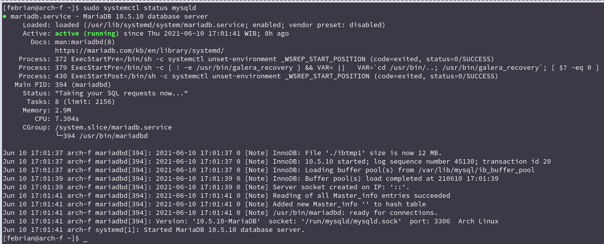
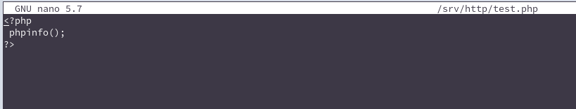

DOCUMENTASI
Dengan mendokumentasikan ilmu dan insight yang saya dapatkan di blog, saya pun dapat belajar, mengulas, dan berbagi secara bersamaan.
Instal Apache, MySQL, PHP dan phpMyAdmin di Archlinux
Ditulis: 10 Jun 2021Home > Arsip > Instal Apache, MySQL, PHP dan phpMyAdmin di Archlinux
بِسْمِ اللَّهِ الرَّحْمَنِ الرَّحِيم
Apache adalah web server yang sangat populer, yang dikembangkan oleh Apache Software Foundation. Kali ini saya akan membagikan pengalaman saya cara menyiapkan Apache dan cara mengintegrasikannya secara opsional dengan PHP.
Instalasi
1. sudo pacman -S php apache mariadb php-apache phpmyadmin
2. yay -S php-mcrypt
Konfigurasi
beri tanda pagar pada baris :
lalu hilangkan tanda pagar pada baris :
kemudian tambahkan seperti di bawah ini dan simpan :
LoadModule php_module modules/libphp.so
AddHandler php-script .php
Include conf/extra/php_module.conf
Jalankan httpd-nya lalu cek statusnya :
1. sudo systemctl enable httpd
2. sudo systemctl restart httpd
3. sudo systemctl status httpd
Konfigurasi MySQL :
lalu Jalankan :
1. sudo systemctl enable mysqld
2. sudo systemctl start mysqld
3. sudo systemctl status mysqld

jika sudah jalan, selanjutnya buat password root pada MySQL (jika ada pertanyaan tinggal enter-enter saja. contoh pada gambar dibawah) :
Kita tes php-nya, sebelumnya bikin file tes.php pada /srv/http/ :

Jalankan pada browser http://localhost/test.php :
selanjutnya Konfigurasi phpMyAdmin :
kemudian aktifkan ektensi berikut dengan menghilangkan titik koma " ; " di depannya atau jika tidak ada di list tambahkan extensi :
extension=pdo_mysql
extension=mysqli
extension=bz2
extension=zip
extension=iconv.so
Konfigurasi file phpMyAdmin :
tambahkan pada /etc/httpd/conf/httpd.conf lalu restart httpd :
Jalankan pada browser http://localhost/phpmyadmin/ :
Semoga Bermanfaat.
Referensi
- https://wiki.archlinux.org/title/Apache_HTTP_Server
- https://wiki.archlinux.org/title/PHP
- https://wiki.archlinux.org/title/phpMyAdmin